Крабы (короткохвостые раки) относятся к ракообразным. Из-за отсутствия хвостовой части, крабы, в отличие от раков, не умеют плавать хвостом вперед, зато они умеют быстро передвигаться боком. Крабы способны находиться на суше и в воде (как в соленой, так и в пресной). Некоторые виды являются ценным объектом промысла.
Голова у крабов небольшая. Брюшко малозаметное, подогнуто под головогрудь. Тело покрыто хитиновым панцирем, неспособным растягиваться, поэтому во время линьки он лопается. Окрас самый различный, в том числе и довольно яркий. Красящие пигменты располагаются в пигментсодержащих клетках панциря и соединительной ткани. Распределение пигментов регулируется с помощью гормонов.
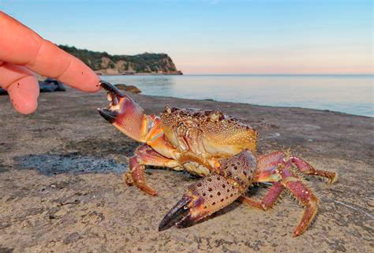Панцирь краба — это его внешний прочный скелет (экзоскелет) с защитными функциями. Как и многие высшие раки, крабы скидывают панцирь по мере роста, оставаясь при этом какое-то время незащищенными, в фазе мягкой оболочки. В течение нескольких недель формируется новый жесткий экзоскелет, на котором могут быть различные выросты (щетина, колючки).
Интересный факт: наиболее высокую скорость крабы развивают, когда передвигаются боком, причем неважно в каком направлении, например, они могут быстро бежать боком вперед. Скорость передвижения может быть весьма значительной (крабы-привидения способны бегать по тропическим побережьям со скоростью 2 м/с).
У некоторых видов передвижение боком является основным. Определить такие разновидности крабов достаточно легко: ноги у них располагаются под прямым углом относительно продольной оси туловища. Представители крабовых могут достигать внушительных размеров. Например, японский глубоководный краб-паук, который обитает вблизи японских берегов, может вырастать до гигантских размеров (около 6 м при размахе ног). При этом вес этих гигантов достигает 20 кг.
Биология крабов достаточно интересна.
Основное отличие в форме тела и манере передвижения.
Большинство крабов живет в соленой воде, сотни видов обитают и в пресных водоемах. Также могут какое-то время находиться и на суше. Это обитатели суши или моря, в зависимости от вида, но преимущественно это морские животные.
Крабы обитают практически во всех морях и океанах, но больше всего разновидностей водится в тропиках.
Представителей морских глубин можно встретить на глубине 5 км, но в основном крабы обитают на побережьях, в приливно-отливной зоне. Роются в мягком грунте, чтобы спрятаться от хищников. Плавают плохо и неохотно. Исключением являются крабы-плавунцы, у которых задние ноги трансформировались в лопасти-весла.
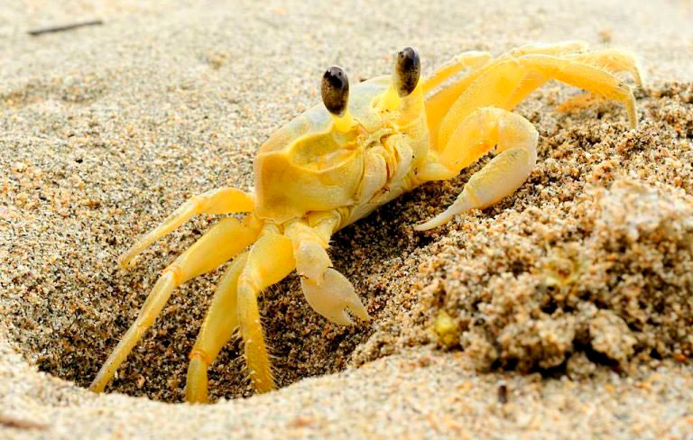У крабов, предпочитающих сухопутный образ жизни, жабры недоразвитые, дышат они органами наподобие легких. Если сухопутного краба опустить в воду на длительное время, он погибнет.
Некоторые разновидности способны запасать воду под панцирем, что обеспечивает им длительное пребывание на суше. Многие крабы предпочитают жить поодиночке. Мелкие разновидности живут в норках рядом друг с другом. В случае угрозы взмахивают клешнями и стучат по грунту, предупреждая таким образом соседей об опасности.
Крабы относятся к всеядным: могут питаться как растительной, так и животной пищей. Поедают водоросли, опавшие листья, моллюсков, мелких ракообразных и червей.
Считается, что крабы склонны к каннибализму и могут поедать своих сородичей, особенно в период линьки.y
Многие виды являются падальщиками — утилизируют разлагающуюся органику, выступая таким образом в качестве санитаров природы. Препятствуют распространению инфекций, что особенно актуально в тропиках.
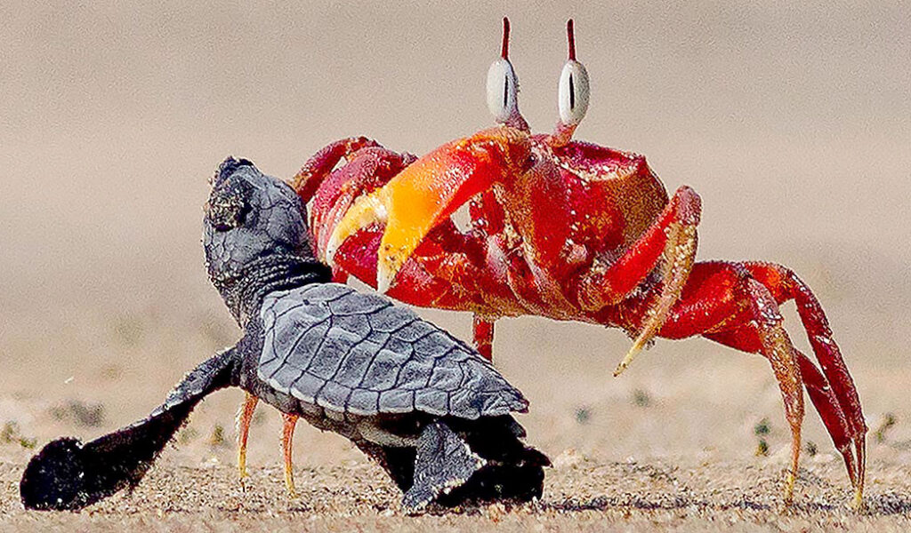Большинство крабов относится к хищникам. Могут нападать и на животных своего размера, даже на черепах. Крупная добыча разделывается на мелкие кусочки, при этом клешни используются в качестве ножа и вилки.
Некоторые виды крабов закусывают основную пищу грунтом и илом вместе с находящимися там микроорганизмами.
Наиболее уязвимы крабовая молодь и особи во время линьки.
От врагов крабы прячутся среди кораллов, в расщелинах и в других естественных укрытиях. Дополнительно роют норы в качестве убежища. Неплохо спасает и маскировка, в которой эти ракообразные могут достигать потрясающих успехов. Если маскировка не срабатывает, краб подымает клешни и становится в боевую стойку. Затем в ход идут клешни-кусачки, способные нанести врагу порезы.
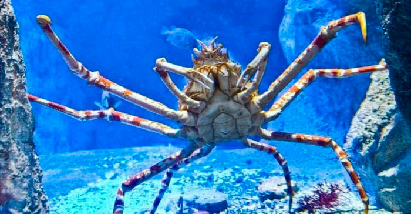У краба-боксера в клешнях припасены актинии (морские животные, похожие на цветок астры). Стрекательные клетки актиний представляют опасность даже для крупных животных.
Некоторые виды при нападении врага идут на самоампутацию ног с мгновенной остановкой кровотечения. Иногда хищники довольствуются такими подачками и оставляют краба в покое. Через несколько линек принесенные в жертву конечности отрастают.
Самцы обычно крупнее, а у самок более широкое брюшко. У самцов первая пара брюшных придатков трансформирована в орган размножения, у самок к брюшным плавательным ножкам крепится икра. Размножение происходит в водной среде и носит сезонный характер, может быть приурочено к высоким приливам или же к сезону дождей. Особи, живущие вдали от берега, в период спаривания мигрируют к воде, к линии прибоя. В период размножения самцы становятся агрессивными и могут покалечить друг друга в соревновательных состязаниях. После ритуального фехтования клешнями, среди самцов определяется победитель, который сигнализирует самке о своей победе. Потом пара несколько дней может стоять «лицом» друг к другу (ритуал происходит непосредственно перед спариванием).
Одного спаривания может хватить самке на всю жизнь, так как сперма самца упакована в особые мешочки (сперматофоры), в которых она сохраняется довольно долго. И для дальнейших оплодотворений участие самца не требуется, самке всего лишь нужно растворить мешочек с половыми клетками специальным секретом.
Период вынашивания икринок может длиться от 2-х недель до нескольких месяцев. После чего вылупляются личинки, которые отправляются в свободное плавание.
Продолжительность жизни варьируется в зависимости от условий и вида. В природе крабы живут от 3-х до 70 лет. В аквариумах могут прожить несколько лет.
Эти ракообразные умеют хорошо приспосабливаться к окружающей среде, благодаря чему представители семейства крабовых достигли большого разнообразия. Существует описание около 7 тысяч видов крабов.
Латинское наименование – Brachyura, что в переводе означает «короткие хвосты».
Имеет тяжелый, с бугорками и наростами, панцирь. Клешни крупные. Обитает в Атлантике, встречается в Черном море, в Средиземном. Охраняется в заповедниках.
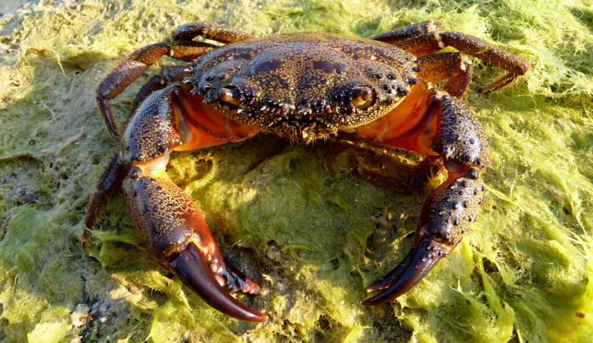Характерная особенность — одна из клешней гораздо больше другой. Обитает на западном африканском побережье, в Тихом и Индийском океане. Размер панциря до 2,5 см.
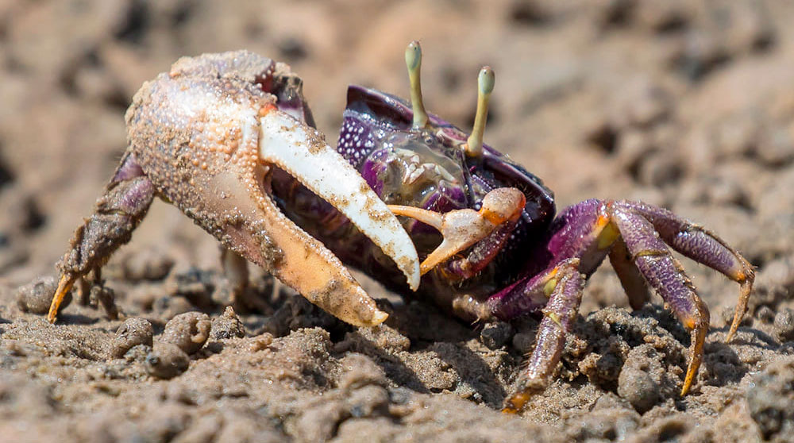Формой немного напоминает лягушку, отсюда и название вида. Другое название – краб-спаннер по форме клешней (от англ. Spanner — гаечный ключ). Водится на американском и австралийском побережье.
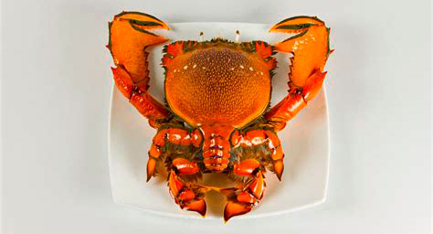Другое название — краб-стригун опилио (от лат. Chionoecetes opilio). Обитает в Охотском и в Беринговом морях, на побережье Канады и Гренландии на глубине до 100 м. Водится в холодной воде, отсюда англ. название – Snow crab (снежный). Размер панциря до 15 см.
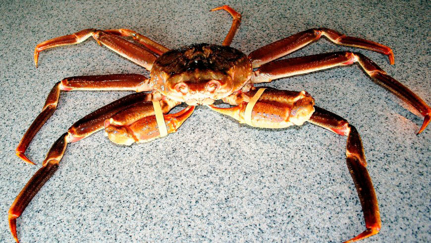Размер панциря до 4 см. Встречается на африканском побережье. Пропитание ищет на пляжах, преимущественно в ночное время.
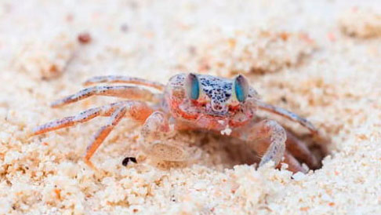Расцветкой напоминает клубнику. Ширина панциря около 5 см. Был обнаружен у берегов Тайваня. Водится в Индо-Тихоокеанском регионе. Подходит для содержания в аквариумах.
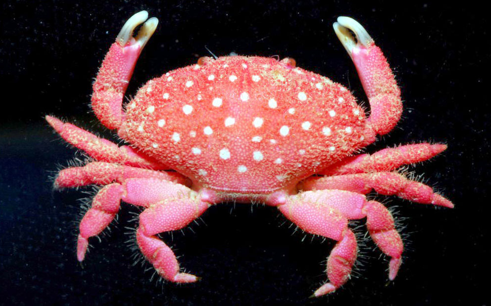Во время миграции к месту размножения, множество красных крабов погибает под колесами транспорта. Чтобы предотвратить массовую гибель ракообразных, на острове Рождества (Австралийская территория Индийского океана) создают специальные ограждения вдоль дорог.
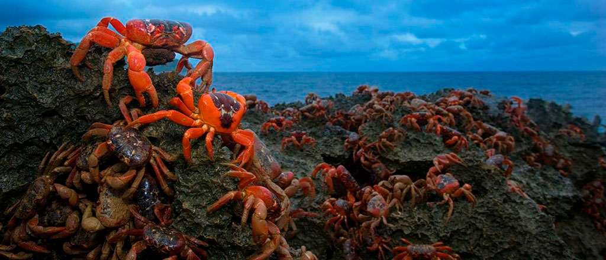Обитает в Атлантике на песчаном побережье Америки. Обладает хорошей маскировкой. Ширина панциря до 5 см. Латинское наименование вида — Ocypode quadrata.
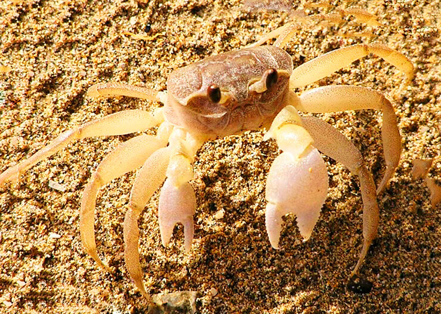Пресноводный. Встречается на острове Палаван (Филиппины). Окрас пурпурный. Размер панциря до 5 см. Латинское наименование — Insulamon palawanense.
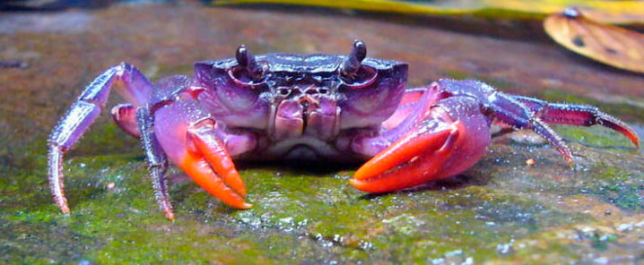Латинское наименование Persephona mediterranea (Персефона средиземноморская). В расцветке панциря присутствуют коричневые пятна. Встречается в Атлантике, в Средиземном море.
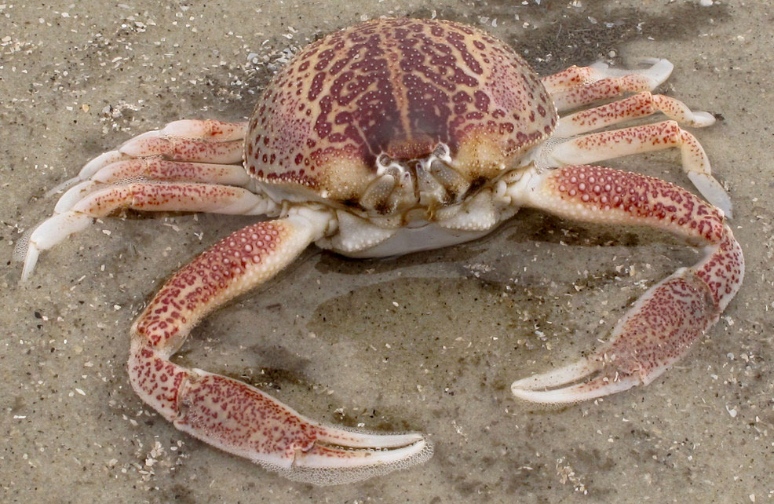Был обнаружен в Юго-Восточной Азии. Обитает в затопляемых мангровых лесах. В окрасе присутствуют выраженные фиолетовые оттенки.

Выглядит сказочным за счет своей «пушистости». Обитает в тропиках. Живет на тропических губках (морские животные с прикрепленным образом жизни).
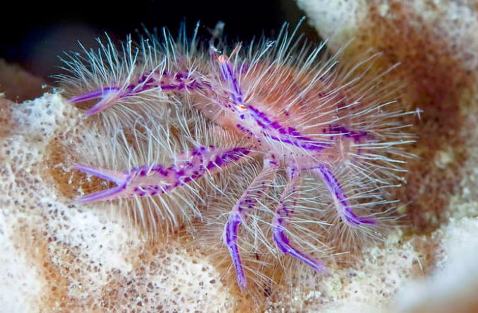Размер панциря около 3 см. Окрас пятнистый. Водится на побережье Тихого океана, Индийского. Подходит для аквариумного содержания, агрессивен только по отношению к своим сородичам.

Другое название — японский глубоководный. Это самое крупное членистоногое. Размер до 6 м (с размахом ног). Вес до 20 кг. Обитает у берегов Японии на глубине до 800 м. Живут предположительно до 100 лет. Объект промысла. Может содержаться в больших аквариумах.

Другие названия: красный краб, мохноногий. Окрас красновато-коричневый с фиолетовыми оттенками. Покрыт волосками. Размер до 3 см. Водится в Атлантике, встречается также и на Крымском побережье.
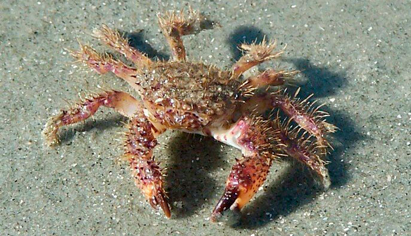Это вид полусухопутного краба, название которого обусловлено характерным рисунком на панцире. Другие наименования (краб-паук, морской паук) вероятно происходят от некоторого внешнего сходства этого вида с пауком. Причем, не только этот вид, многие некрупные крабы действительно похожи на пауков.
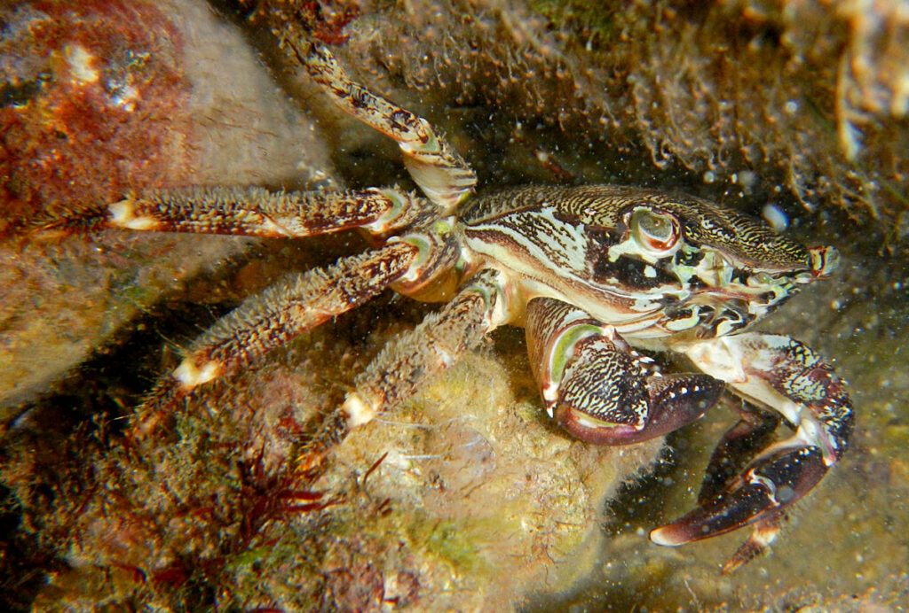Ширина карапакса до 4 см. Встречается возле берегов Крыма, где имеет еще одно название — «цыган». Водится в Атлантике и в Средиземном море.
Обитает в Средиземноморском бассейне. Встречается в Черном море возле берегов Крыма. Проник в Азовское море. Ширина панциря до 8 см. Донный краб, живет на глубине до 40 м, обычно до 3 м. Предпочитает заросли водорослей, за что и получил свое название.
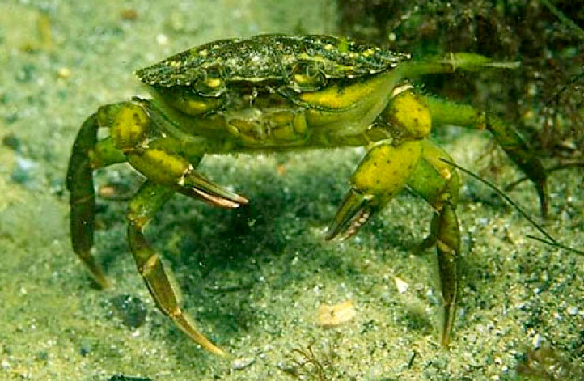Ширина карапакса до 20 см. Масса до 1 кг. Живет до 4 лет. Обитает в Атлантике, а также на Балтике, в Северном и в Средиземном морях. Водится в устьях рек и на мелководье, на глубине до 40 м. Прячется в тине. Агрессивен. Относится к семейству крабов-плавунцов, умеет хорошо плавать благодаря лопастям на последней паре конечностей. Считается деликатесом.
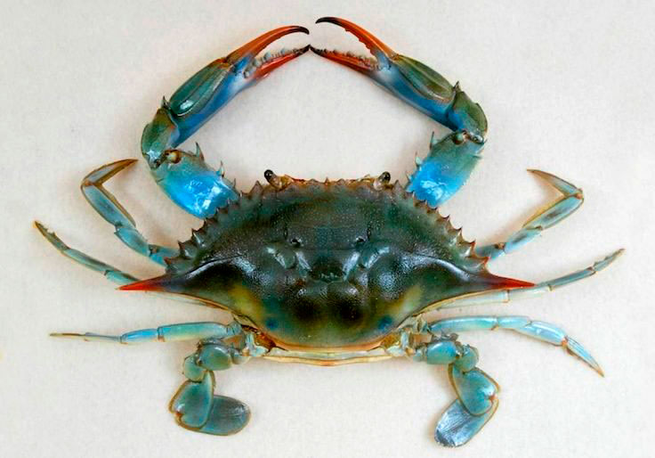Водится в Желтом море. Был случайно завезен в Европу из Китая. Встречается в Черном море, на Волге и в Онежском озере. Мигрирует в моря для размножения. Мохнаторуким этого краба прозвали за многочисленные волоски на ходильных ногах. Размер панциря до 7 см. Обитает на глубине до 15 м, живет в норах. В Китае считается деликатесом.
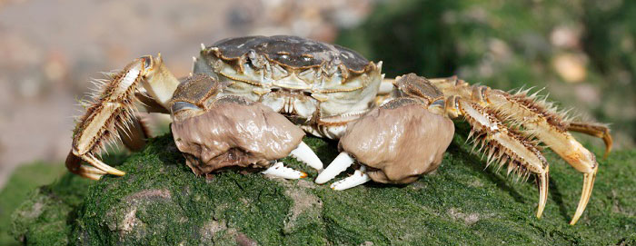Обитает в мангровых болотах (лесах) приливно-отливной зоны Юго-Восточной Азии. Мангры заливает водой до 15 раз в месяц.
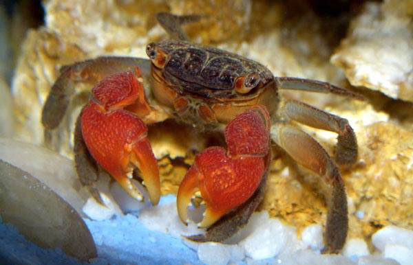Размер до 6 см. Расцветка красно-коричневая, иногда сине-фиолетовая. Прячется в норах, много времени проводит на суше, поэтому этот вид относят к сухопутным. Может содержаться в аквариуме.
Обитает в реках и озерах Южной Европы. Встречается в Краснодарском крае. Используется в пищу с античных времен. Размер до 5 см. Живет до 15 лет. Агрессивен, выгоняет других рачков из их нор, где потом и живет.
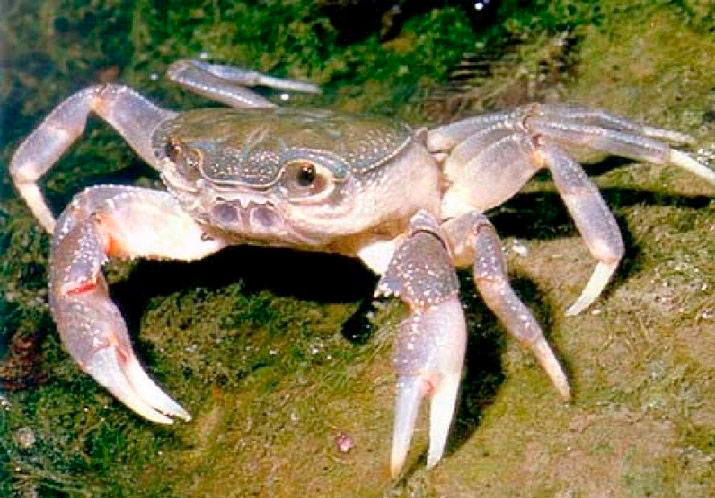Этот представитель крабов весь в «колючках»-шипах. Размер до 14 см. Водится у берегов Камчатки и Сахалина. Обитает на глубине до 300 м, чаще на глубине до 20 м. Охотится на мелких моллюсков. Объект промысла для любителей морских деликатесов.
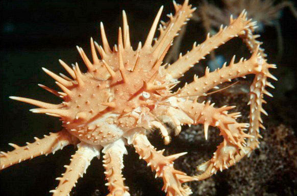Обитает в дождливых лесах о. Мадагаскар и в расщелинах древних известняков. Окрас желто-розовый. Размер до 7 см. Имеет статус уязвимого вида.
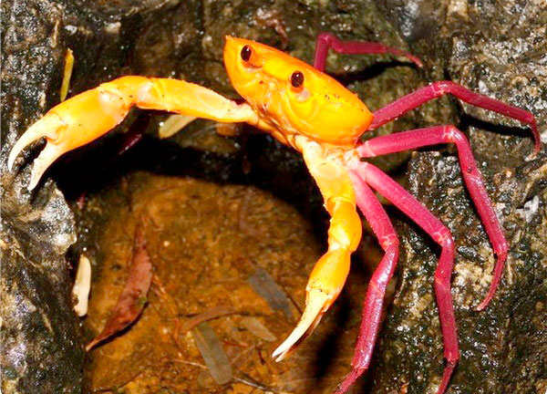Красивый обитатель Карибского моря размером с небольшую пуговицу (диаметр панциря до 1,5 см). Окрас яркий, с индивидуальным узором. Ядовит. Содержит токсины, которые не разрушаются при тепловой обработке. Активен ночью. Днем прячется в кораллах или зарывается в галечный грунт.
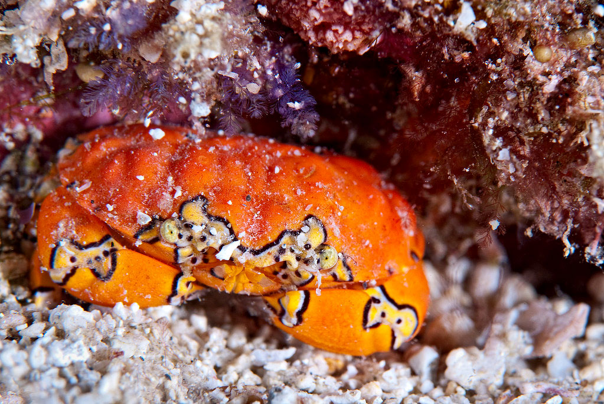К семейству «крабоиды» относят неполнохвостых раков. Эти ракообразные похожи на крабов, но у них отсутствует или практически не выражена 5-я пара ходильных ног, а у самок имеется асимметричное брюшко. Крабоиды имеют промысловое значение.